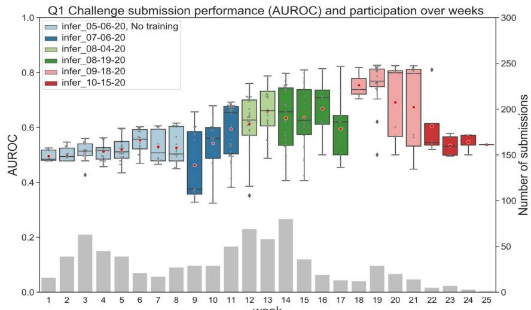
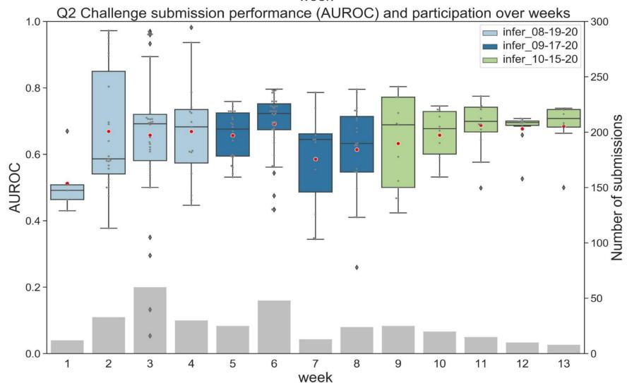
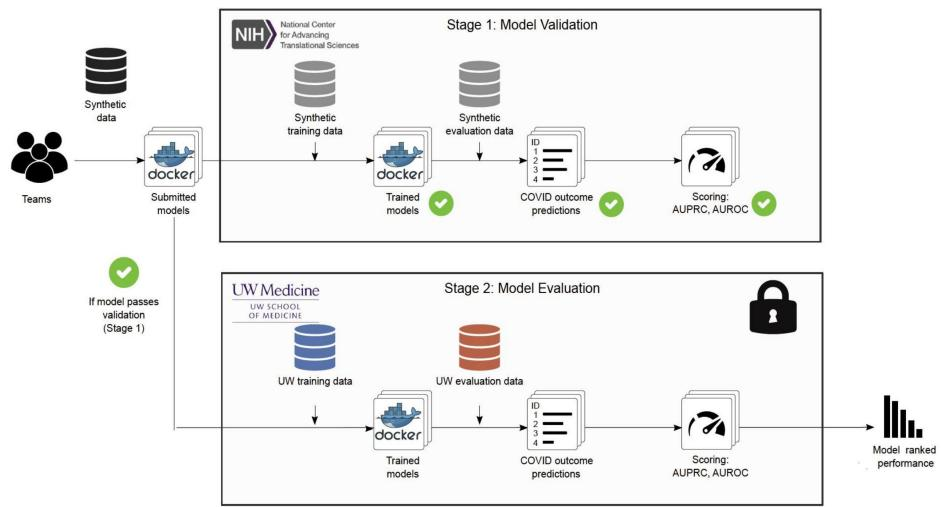
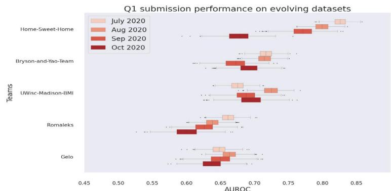
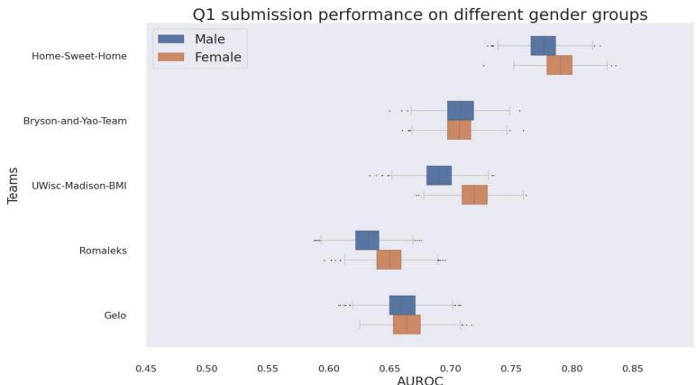
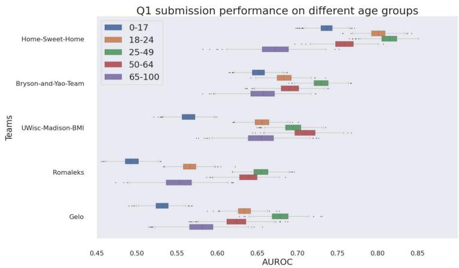

A Continuous Benchmarking Community Challenge for COVID-19 Outcome Prediction
Implementing a Model-to-Data approach to enable citizen science and model benchmarking for COVID-19 outcome prediction
Alternative approach for sensitive EHR data sharing
Sensitive EHR data sharing is restricted under HIPAA to protect patient privacy, raising the threshold for researchers outside health institutions to access and utilize patient data to aid in the COVID-19 pandemic response.
Our solutions - Model-to-data paradigm
- Containerized models submitted by participants are trained and evaluated on COVID-19 patient EHR datasets from UW Medicine health system in secure UW on-premises computing environment.
- Only model performance scores Area Under the Receiver Operator Curve (AUROC) and Area Under Precision-Recall Curve (AUPRC) are returned to participants.
EHR DREAM Challenge - COVID-19 Prediction
Questions
- Q1. For a patient who has received a COVID-19 test, how likely will he/she test positive?
- Q2. For a patient who has tested positive during an outpatient visit, how likely will he/she be hospitalized within 21 days from COVID-19 test?
Data
- Data are updated every 2-4 weeks. Six releases of the dataset in Q1 have been prepared over 25 weeks. The dataset in Q2 has been updated 3 times over 13 weeks.
- The data were collected from the UW Medicine health system and were dated back to 2010.
- As of late November 2020, the combined dataset included ~90,000 patients tested for COVID-19 since February 2020. ~3,500 patients have tested positive. ~120 have been hospitalized within 21 days after testing positive.


Participation
- As of late November 2020, 482 participants have registered for the challenge.
- We received 483 valid submissions from 65 teams for Q1 and 226 valid submissions from 25 teams for Q2.
- The AUROC and AUPRC of the best-performing model so far are 0.827 and 0.303 seen in the dataset version $^\dag 09-18-20^\dag$ for Q1, and 0.982 and 0.897 for Q2 dataset version "08-19-2020".
Model-to-Data Paradigm Workflow

Post challenge analysis
Experiment design
As of mid November, our accumulated datasets included ~90K patients who have tested for COVID-19. We split the datasets into training (patients who tested before July 2020, $50\%$, ~45K patients) and evaluation datasets (patients who tested after July 2020, the other $50\%$). We selected the top 5 models from the challenge Q1 and re-trained the models on the training datasets and evaluated the models using the evaluation datasets. We used bootstrapping to get models' performance on sub-datasets stratified by months when patients were tested, age and gender.
Conclusions
- Some models might overfit to the training data and model's performance degrades over temporal evolving datasets while some are more resistant to performance degradation over time (UWisc-Madison-BMI).
- Four out of the five best-performing models achieve a significantly higher AUROC value on female patients compared to male patients $(p < 0.0001)$.
- The performance of models is the highest on the 25-49 age group among all other age groups.


